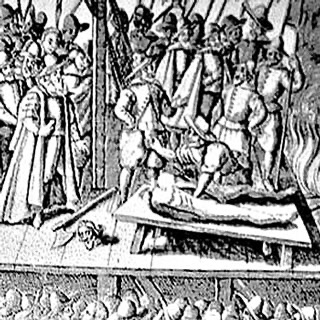

Isusovački blaženici
Svećenik · Mučenik
Bl. Ivan Nelson
oko 1535. – 1578.
Engleski svećenik odbio je odreći se vjernosti Katoličkoj Crkvi. U Družbu Isusovu primljen je u zatvoru, neposredno prije mučeništva u Tyburnu.
Tekst je preveden i prilagođen uz pomoć umjetne inteligencije.

Izvor slike
- Spomendan
- 3. veljače
- Zaštitništvo
- Nije navedeno u izvoru
- Životni vijek
- oko 1535. – 1578.
- Datum smrti
- 3. veljače 1578.
- Mjesto smrti
- Tyburn, Engleska
- Svećeničko ređenje
- Lipanj 1576.
U kalendaru zbirke koristi se dan smrti. Taj datum nije zasebna potvrda liturgijskoga spomendana.
Životopis
Ivan Nelson rođen je oko 1535. u Yorkshireu. Zalagao se za otvoreno ispovijedanje katoličke vjere u okolnostima u kojima je ona bila kažnjavana. Već zreo čovjek otišao je u Douai na pripravu za svećeništvo. Zaređen je u lipnju 1576., a potom se vratio u Englesku služiti tamošnjim katolicima.
Njegova je služba prekinuta uhićenjem 1577. Pred vlastima je posvjedočio da papu priznaje poglavarom Crkve te je odbio prisegu o kraljičinu prvenstvu u vjerskim pitanjima. Osuđen je za veleizdaju. Iz zatvora je zamolio primanje u Družbu Isusovu i njegova je molba prihvaćena. Pogubljen je 3. veljače 1578. u Tyburnu.
Tekst je preveden i prilagođen uz pomoć umjetne inteligencije.